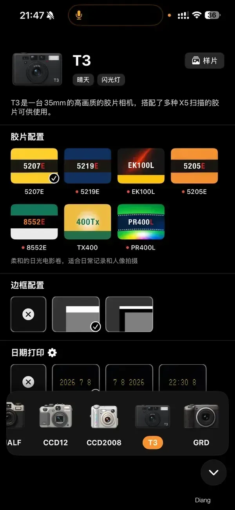
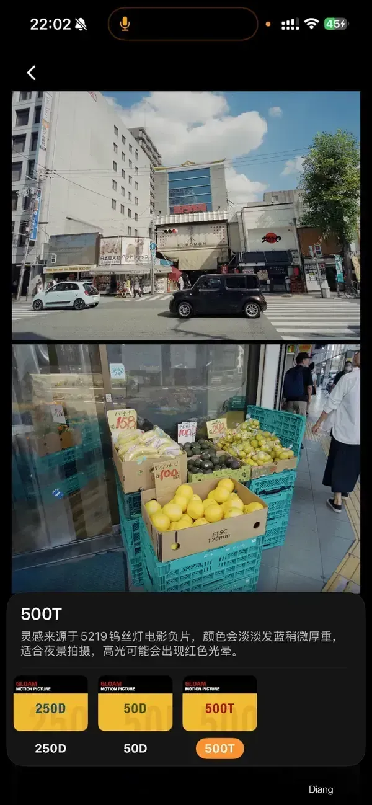
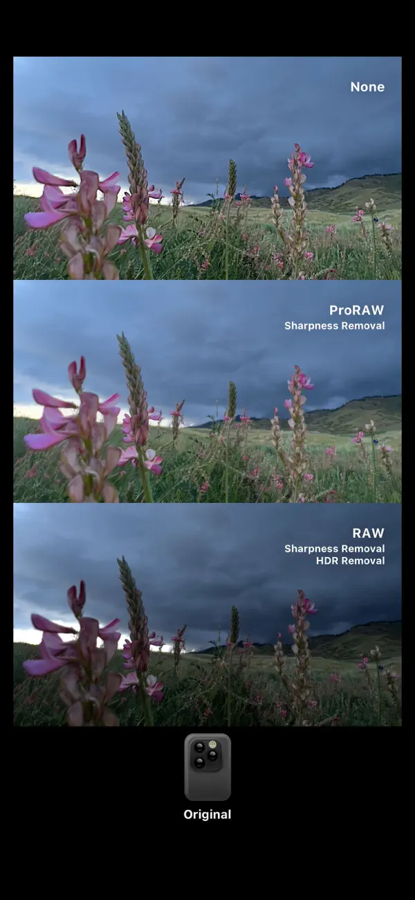
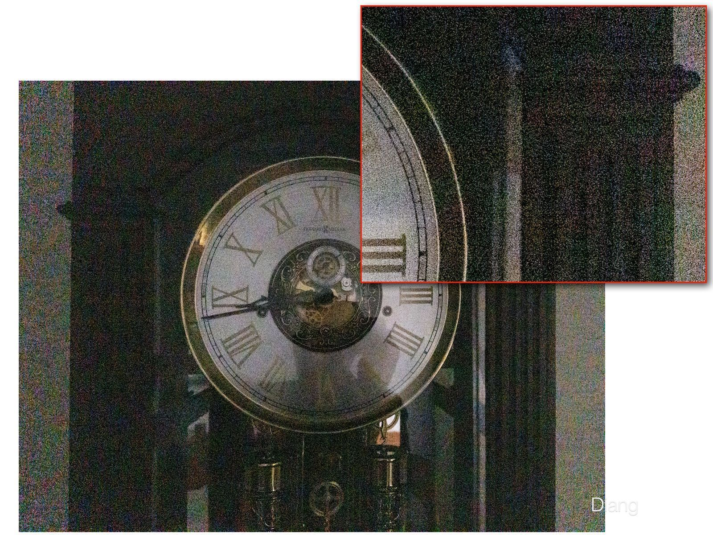
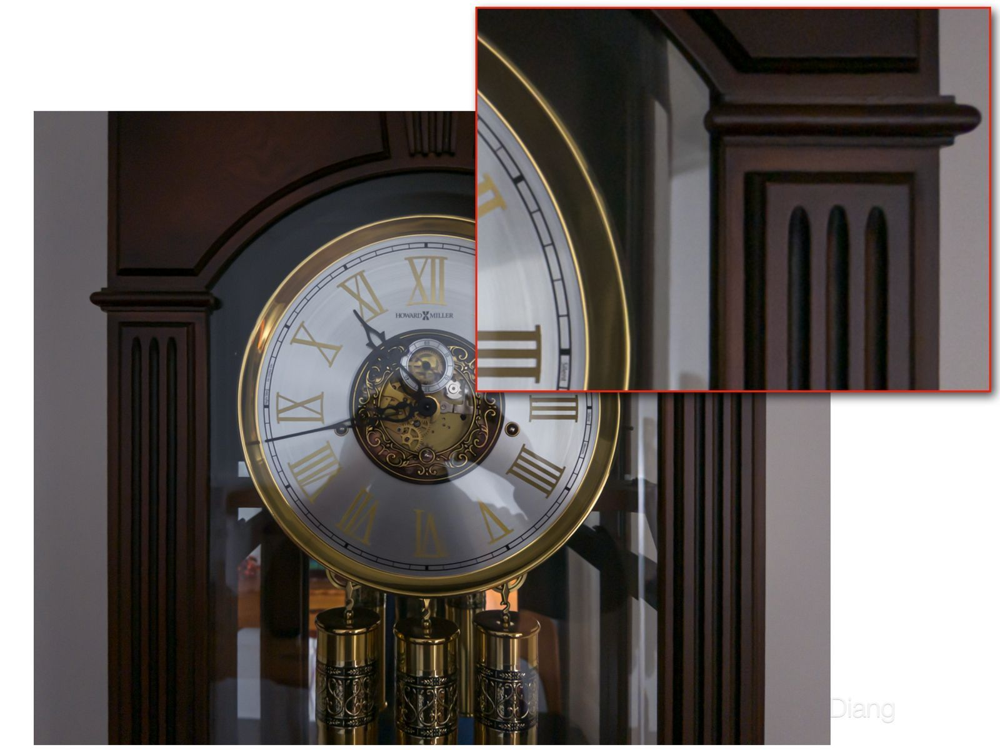
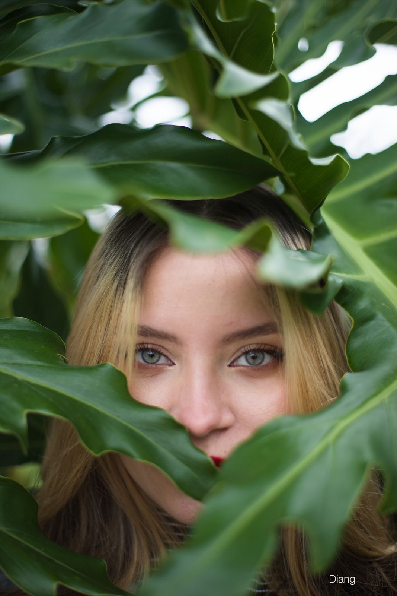

手机里的底片，电脑里的暗房：2026 胶片模拟与计算摄影全景
这篇文章讲什么
同样叫“胶片模拟”，有的应用改变手机怎样采集画面，有的重新解释 RAW，有的处理已经显影的照片。这篇文章从输入到输出，梳理 Gloam、No Fusion、Dazz、Project Indigo 与桌面胶片工具各自做了什么。
- 先看输入：单帧 RAW、多帧计算 RAW 和 JPEG，保留的调整空间不同。
- 再看风格：颜色、颗粒、光晕和冲扫参考，需要分别比较；LUT 也可以来自物理模型。
- 最后选工作流：日常直出、保留原片和桌面精调，可以按场景配合使用。
文中结合官方样片、厂家数据和可复算图表展开分析，未进行跨应用的统一实拍横测。
从 Gloam、No Fusion、Dazz、Project Indigo，到 spektrafilm、Lightroom 与 Photoshop
研究截至：2026 年 11 月 1 日。 本文把“Pi / PI”理解为 Adobe Project Indigo。Dazz 指 DAZZ PTE. LTD. 发布的 Dazz Cam（App Store ID 1422471180）。研究覆盖移动拍摄、桌面显影、胶片风格资产和材料模拟，不把同名应用、不同宿主插件或历史版本视作同一产品。
方法与数据： 官方产品文档、开发者技术文章、公开源码和学术论文交叉核查；配以真实公开样片、厂家颗粒数据、固定版本模型曲线和自行复算的数值示例。本文没有进行跨应用的统一实拍横测。图注分别标明“官方展示”“厂家数据”“模型数据”与“公式计算”，据此区分照片说明和测量结论。
阅读路线
- 全局结论与技术路线地图
- 胶片外观究竟包含什么
- 手机采集：Bayer RAW、ProRAW 与多帧计算摄影
- Gloam、No Fusion、Dazz 及移动市场比较
- Pi / Project Indigo：计算摄影与胶片模拟的连接点
- 电脑端：预设、Profile、LUT、插件和完整模型
- spektrafilm 的模型、数据与真实示例
- 颗粒、光晕、色彩管理与处理顺序
- 市场价格、商业形态与竞争方向
- 跨设备工作流与选择建议
- 怎样做一场有效的实测
- 综合判断、图源与完整参考资料
1. 全局结论：产品的差异，首先来自它控制了哪一段管线
Gloam、No Fusion、Dazz、Pi 与 spektrafilm 之间，既有竞争，也有互补。一个应用可能改变快门前后的采样方式，另一个可能重新解释 RAW，第三个则只接收已经显影好的照片。把它们放进同一张“哪个滤镜最像胶片”的榜单，会掩盖决定结果的输入差异。
先列出这次调研的六个结论：
- “减少手机味”可以通过不同路线实现。 单帧 RAW 可以绕过多帧融合；ProRAW 可以保留融合结果而改变显影；Indigo 甚至用更多计算换取更少的空间涂抹。三者都可能得到克制的外观。S01 S02 S03
- 一个品牌通常包含多条管线。 No Fusion 默认 HEIF+ 借助 ProRAW，也允许 Bayer RAW；Dazz 的 Original 相机公开展示 RAW / ProRAW 选择。分类单位应该是“应用＋模式＋机型”，而不只是应用名称。S12 S13 S17
- LUT、Profile 与物理模型不是互斥等级。 LUT 是一种运行或交付形式；真实胶片测量、审美设计和光谱模型都可以产生 LUT。需要另外核查空间处理和可调整的过程参数。S36 S58 S60
- “Portra 400”不足以定义唯一的成片。 曝光、显影、相纸、放大机滤色、扫描和反相，都参与最终色彩。不同软件可能对准不同参考链。S40 S61 S65 S68
- 2026 年的产品基线已经变化。 Halide Mark III 支持对已有 ProRAW 重新应用 Looks；Camera Raw 18.6 已原生加入 Diffusion、Bloom 与 Halation，不能沿用“手机只会套滤镜、Adobe 只能调颜色”的旧分类。S24 S25 S38 S39
- 模型复杂度、参考匹配程度和个人喜好需要分别评价。 光谱模型提供可解释的过程控制，实物标定擅长逼近指定冲扫结果，经过充分打磨的作者风格则可能更符合日常拍摄需要。模型名字本身不能代替最终验证。
比较产品时，先看三个维度
| 维度 | 核心问题 | 典型分支 |
|---|---|---|
| 输入与介入位置 | 它拿到的是什么？ | 单帧 Bayer RAW、融合后的计算 RAW、已渲染 JPEG/HEIF、Log/linear RGB |
| 模型依据 | 风格如何构建？ | 作者调色、真实胶片/扫描标定、光谱与感光材料建模、学习得到的近似模型 |
| 运行与交付方式 | 用户怎样使用？ | 相机 App、XMP 预设、Profile、3D LUT、空间效果插件、独立 RAW 编辑器 |
例如，经过真实胶片标定的颜色模型，可以以 Profile 交付，再由宿主加入颗粒；光谱模型也可以预计算成 LUT，再叠加程序性光晕与颗粒。两者都用了查表或配置文件，但模型依据和空间处理能力仍有区别。
2. 胶片外观是一条成像链的结果
2.1 负片与光学放相：两次材料响应共同塑造外观
以彩色负片和光学放相为例，场景光先作用于胶片各感色层，显影后形成具有不同光谱吸收的染料；放大机的光再穿过负片，使彩色相纸曝光、显影，最终在指定照明下观看。直接扫描负片则走另一条输出路径：扫描器及反相算法承担了许多原本由相纸完成的颜色和影调转换。S40 S55 S56 S57
flowchart TD
A["场景光与镜头"] --> B["胶片曝光与显影"]
B --> C["有光谱密度的负片"]
C --> D["扫描与反相"]
C --> E["放大机与相纸曝光"]
E --> F["相纸显影"]
F --> G["观看或扫描相纸"]
D --> H["最终色彩与影调"]
G --> H
这解释了市场上同名胶卷风格的差异：有人参考某家实验室的 Frontier 扫描，有人参考光学相纸，有人直接根据个人拍摄经验设计颜色。它们未必在模拟同一个终点。Negative Lab Pro 为真实负片提供不同扫描器风格的反相模型，也从另一个方向说明了输出链的重要性；它的主要任务是对真实胶片的数字扫描件进行反相与调色，与给数码场景添加胶片风格不同。S49 S61 S68
2.2 “胶片感”至少包含六组可分离的属性
| 属性 | 对画面的影响 | 常见数字实现 | 判断时应留意 |
|---|---|---|---|
| 颜色与影调 | 肤色、植被、阴影色偏、高光收敛、对比 | 曲线、矩阵、HSL、LUT、Profile、光谱模型 | 颜色偏移是否随曝光与光源合理变化 |
| 颗粒与材质 | 平滑区域的密度起伏、细节的微观结构 | 扫描纹理、程序随机模型、神经纹理模型 | 亮度依赖、空间频谱、通道相关、输出倍率 |
| Halation | 强光边界附近的回返曝光痕迹 | 与亮度、通道和邻域有关的扩散模型 | 不能简单等同于任何红色描边 |
| Bloom / Diffusion | 高光周围柔和散射、对比减弱 | 卷积、散射核、亮度选择性混合 | 与镜头、滤镜或介质的散射目标有关 |
| 光学与扫描特征 | 暗角、MTF、色差、扫描锐化 | 镜头模型、频率响应、局部处理 | 往往不属于胶卷材料本身 |
| 拍摄与媒介体验 | 画幅、边框、日期、漏光、等待与随机性 | UI、裁切、叠加层、交互限制 | 可以很有价值，但与材料复现是不同目标 |
这里的划分是分析框架：各软件会混合采用这些方法。颗粒模型可参照公开论文，光晕与散射则可在开放模型及开发者文档中检查其处理位置。S22 S58 S69 S71
CCD 风格和胶片风格也应分开。CCD 是传感器类别；Gloam、Dazz 所说的 CCD 外观通常指向某类老数码相机的综合色彩、影调和成像习惯。软件里的“中画幅”“120”“50mm f/1.2”则可能描述画幅或镜头风格，不会改变手机的真实传感器面积与入瞳。S08 S17 S32
3. 手机采集：先弄清楚 RAW 到底是什么
3.1 四种常见输入，保留了不同程度的选择权
| 输入 | 已经发生的处理 | 后期仍能控制什么 | 主要代价或约束 |
|---|---|---|---|
| 单帧 Bayer RAW | 取得颜色滤阵列采样；具体底层校正依设备而异 | 显影、颜色、影调、部分降噪与锐化 | 暗光噪声、单帧动态范围、机型/镜头分辨率限制 |
| Apple ProRAW | 已去马赛克，可包含多帧融合等计算处理 | 更多颜色/曝光调整；部分锐化、色调映射作为渲染配方可改 | 已发生的融合不能事后变回独立原始帧 |
| 自有多帧计算 RAW | App 控制采集、配准、融合与部分重建，例如 Indigo | 保留该计算结果的再显影余地 | 处理时间、运动场景、热量、缓存与设备支持 |
| JPEG / HEIF 成片 | 通常已烘焙色彩、影调、降噪、锐化及部分局部处理 | 继续调色、材质和局部修饰 | 很难可靠撤销已剪裁、涂抹或过度锐化的信息 |
依据 Apple RAW/ProRAW 文档、Indigo 文档及 HDR+ 论文整理。S01 S02 S03 S07
RAW 是一类数据工作流，DNG 是容器。 两者都不是“绝对没有处理”的保证。Apple 明确说明 ProRAW 可存储融合后的、可线性化的 RGB，同时附带默认渲染所需的色调、锐化等信息。因此，“把默认显影换掉”和“拍摄时取消融合”是两件事。S02
也不要把“12 bit”“14 档”“48MP”排成一条画质线。位深描述编码，动态范围涉及可区分的亮暗信号，像素数描述采样规模。Apple 在 WWDC21 对 ProRAW 的说明包括 12-bit 压扩编码和最高约 14 档的设计表述；这既说明位深与档数不能直接画等号，也不能用作所有新机型、镜头和场景的独立实测值。S02
3.2 四个经常混在一起的“关闭 HDR”
- 关闭多帧采集/融合：改变取得信息的方式。
- 减少局部色调映射：改变如何安排明暗关系。
- 降低动态范围或高光压缩强度：改变成片的影调设计。
- 关闭 HDR 显示输出：把照片放进 SDR 的显示范围。
这些控制并不等价。单帧 RAW 可以输出 HDR 显示照片，多帧融合也可以输出克制的 SDR 照片。Halide 的 HDR Looks 和 Indigo 的 JPEG/DNG 输出，都让这种区分具有实际意义。S04 S24 S70
4. 手机市场：Gloam、No Fusion、Dazz 应该怎样比较
4.1 核心产品矩阵
| 产品 | 公开可证实的技术位置 | RAW 留存 / 再编辑 | 主要价值 | 需要按模式核实的部分 |
|---|---|---|---|---|
| Gloam | 本地处理 JPEG、RAW/DNG；以虚拟相机和扫描色彩组织风格 | 有保留原片、编辑参数与关联照片同步设计；官方政策不提供任意相册导入 | 作者化色彩、拍摄即成片、统一风格体验 | Bayer / ProRAW、融合策略、颗粒模型未公开 |
| No Fusion | 标准 HEIF、RAW、HEIF+、Negative Film 多分支 | Bayer / ProRAW 可保留；App 内重显影、LUT 导入 | 采集与显影选择、开放风格输入、较强控制能力 | HEIF+ 默认仍可利用 ProRAW；各机型能力不同 |
| Dazz Cam | 大量虚拟机身；Original 公开展示 RAW / ProRAW 分支 | 部分相机有底片再处理和导入 | 媒介种类、操作仪式、边框与风格完整性 | Original 的能力不能外推至所有虚拟相机 |
| mood.camera | 支持的 Pro 机型走自有 ProRAW 渲染；非 Pro 或较旧机型使用 JPEG 路径 | 不保存 RAW、不导入照片 | 强调即拍即得，颜色、颗粒和光晕一体化 | 使用 RAW 做图不等于向用户提供 RAW 工作流 |
| Halide Mark III | 单帧 Process Zero、Apple/ProRAW 入口与 Looks | DNG、Photo Lab、已有 ProRAW 与外部相机 RAW | 自有采集与后期显影结合、细粒度控制 | Process Zero 采集与 Process Zero 渲染要区分 |
| Project Indigo | 自建 RAW 多帧采集、重建与显影 | JPEG＋DNG，衔接 Lightroom | 信息质量、暗光、超分辨率与自然影调 | 不以胶卷库为主要目标；计算成本与输出支持另计 |
表中功能依据相应官方材料整理，未公开的项目保持未知。S08 S09 S12 S13 S17 S19 S20 S24 S26 S04
4.2 Gloam：把一套色彩审美变成相机
Gloam 按虚拟相机组织风格：T3 对应胶片扫描式色彩，CCD12 借用经典小型数码相机的视觉语言，GRD 提供街拍取向的负片、正片和黑柔效果。品牌站也能追溯到英泽君的预设与影像风格业务。S08 S11
| Gloam 官方界面 | Gloam 官方 500T 展示 |
|---|---|
 |
 |
图 2｜Gloam 官方商店图片，开发者英泽樊。用于观察“相机—胶卷—边框”的产品结构和风格表达；图片未提供可用于量化还原误差的源 RAW 与冲扫参考。S08
对于它的技术定位，公开资料能支持到这一层：它具有 RAW/DNG 数据处理与原片管理设计，但采集和显影的具体算法没有完整披露。 隐私政策列明本地处理的文件和编辑状态，却没有回答不同手机究竟采用 Bayer RAW 还是 ProRAW、是否融合，以及颗粒如何生成。S09
如果已经习惯用 Gloam 拍照，可以先看几个具体问题：喜欢的肤色、阴影和高光能否在常拍场景中保持稳定；换镜头后是否仍一致；保留原片后有多少重调空间。这些结果足以帮助判断它是否适合日常拍摄，无须先假定它采用了完整的胶片化学模拟。
4.3 No Fusion：按拍摄模式拆开看
No Fusion 官方明确：HEIF+ 使用 RAW 路径与自己的校准、压缩，默认介绍基于 ProRAW；标准 HEIF 则走 Apple 标准输出。它的“Negative Film”是便于保存原始信息和重编辑的产品格式，内部还可以选择 ProRAW、Bayer RAW 或 HEIF。S12 S13
flowchart TD
A["No Fusion 拍摄模式"] --> B["标准 HEIF"]
A --> C["RAW 原件"]
A --> D["HEIF+"]
A --> E["Negative Film"]
B --> F["Apple 标准成片"]
C --> G["Bayer 或 ProRAW 保存；不烘焙滤镜"]
D --> H["RAW 显影、校准、风格与输出"]
E --> I["ProRAW、Bayer 或 HEIF 数据；App 内重编辑"]
图 3｜左：iPhone Camera；右：No Fusion HEIF+。来源 No Fusion 官方。同场景展示可帮助观察屋檐、荷叶等边缘的处理差异；并非固定同一 RAW 的显影对照，也不是本文的受控拍摄。S12
这类产品的主要优势是把成像决策开放给摄影者。它允许外部 LUT，也解释了取景与最终 HEIF+ 可能不完全相同：两者的基础管线不同。S14 S15
如果想减少锐化痕迹，未必需要放弃 ProRAW 的融合信息；如果希望保留单次曝光的采样，则应明确选择 Bayer RAW 分支。最终文件看上去柔和，不能单独证明采取了哪一种方式。RAW 原件保存与烘焙风格的 HEIF+ 输出也应分开理解。
4.4 Dazz：虚拟相机是产品入口，不是统一算法规格
Dazz 把多种媒介包装成可直接使用的相机：135、120、半格、即影即有、玩具相机和老数码风格。官方说明还包括部分机型的照片导入与底片再处理。S17

图 4｜Dazz 官方商店的 Original 相机示意，分别标注 None、ProRAW 的锐化移除、RAW 的锐化与 HDR 移除。这是当前产品提供不同路线的一手展示；“HDR Removal”是开发者界面术语，不应外推为对所有 HDR 环节的技术定义。S17
这张图修正了一个常见归类：Dazz 不能整体当作只接收 JPEG 的滤镜应用。但同样不能因为 Original 有 RAW，就推断所有虚拟胶片相机都采用同一条 RAW 管线。
它与 Gloam 的重叠在于直出风格与体验，区别则应落到具体相机：能否导入、能否重显影、颗粒与边框如何随画幅变化，以及常用人物和光线下的表现。购买一个虚拟“120”相机，得到的是一种组织画面与材质的方式，不是手机硬件突然获得中画幅的采光条件。
4.5 另外两条路线：mood.camera 与 Halide
mood.camera 说明了“使用 RAW”和“提供 RAW 工作流”的差别。 它会利用支持设备的 ProRAW 进行自有处理，但有意不交付 RAW 保留、不接受照片导入，也不提供完整最终效果的实时预览。开发者把这些取舍解释为即拍体验；其风格也不是对某个具体胶卷的逐一复制。S19 S20 S21
它的 v2 文档还具体讨论了亮度相关的 Bloom、Halation 和影调变化。这样的披露比“真实胶片感”更有技术信息，但仍是开发者对实现的说明，不能替代公开误差验证。S22
Halide Mark III 同时提供采集和显影功能。 2024 年 Process Zero 的核心是单帧 RAW；2026 年版本增加 Looks、Photo Lab 和外部 RAW 处理，让已有 ProRAW 也能采用另一套渲染解释。S23 S24 S25
| 同一 ProRAW：Apple 默认 SDR 渲染 | 同一 ProRAW：Halide 替代渲染 |
|---|---|
图 5｜Lux / Ben Sandofsky，2026-01-28《Inside Looks》官方案例。输入是同一个 ProRAW，展示的是渲染差异；右图不会使已经融合的数据重新变成单帧。此处保留官方图片，不以 Markdown 的显示结果评判 HDR 峰值亮度。S24
4.6 其他产品的定位与限制
| 产品 | 在市场中的代表性 | 与核心产品比较时的边界 |
|---|---|---|
| VSCO Capture | 独立免费相机，50+ 实时预设；RAW/ProRAW 与 Grain/Bloom/Halation | 需与 VSCO 主 App 区分；主 App 的 RAW 功能说明不能直接套给 Capture S27 S28 S29 |
| NOMO CAM | 把随机曲线、颗粒、尘点、漏光和边框组织成胶片相机体验 | 不要与同公司的 NOMO RAW 混为一谈 S30 |
| FIMO | 胶卷包、年代媒介与拟物操作；官网提供 iOS/Android 入口 | 卷名和 ISO 标签不能单独证明感光材料标定 S31 |
| Leica LUX | 品牌色彩与计算镜头风格，结合 RAW/ProRAW | 模拟镜头外观与真实光学采光能力分开理解 S32 |
| Chromagraph | 摄影指导 Steve Yedlin 的作者化 RAW 色彩与纹理，保留原始文件 | 2026 年 10 月已可在商店获取；公开说明不足以补齐全部内部算法 S33 |
本文移动样本偏重 iOS。Android 的 Open Camera 提供 Camera2 RAW/DNG 和手动控制，也有包围曝光与 HDR；具体功能取决于设备支持。它代表开放采集入口，不应归作胶片风格引擎。FIMO 等跨平台产品则需要按各平台版本分别核对能力。S31 S80
5. Pi / Project Indigo：更多计算，也可以得到更自然的照片
5.1 它首先解决的是采样和重建
Indigo 由 Adobe Nextcam 团队开发。它在 RAW 层进行多帧采集、配准和融合，再决定如何显影。其技术说明强调较保守的高光曝光和较少的空间平滑，常规介绍中的融合规模最高达 32 帧。这里的“自然”是一种重建与渲染选择，不等于完全不做计算。S03
Google 的 HDR+ 论文早已展示了这个思路：以相同曝光采集一串 Bayer RAW，保护高光，再通过融合降低阴影噪声。它说明多帧并不必然意味着很重的局部 HDR 外观；采样、降噪和成片影调可以分别设计。S07
| 官方单帧暗光示例 | Indigo 官方 32 帧融合示例 |
|---|---|
 |
 |
图 6｜Adobe Nextcam 官方演示：约 0.1 lux 照明下的 iPhone 单帧与手持 32 帧结果。页面整体摄影署名包括 Marc Levoy、Florian Kainz 等，未逐图指定个人。此图解释多帧降噪能力，不是胶片还原对照。S03
Indigo 的现行 FAQ 说明，默认保存 JPEG＋DNG，JPEG 为 12MP，DNG 分辨率会随数字变焦、超分辨率和模式变化；Night 模式还提供帧数控制。Long Exposure 的无限帧选项属于另一种时间合成模式，因此不能把“32 帧”当作所有功能的绝对上限。S04
5.2 多帧的理论收益可以计算，产品收益需要实测
若每帧信号相同、噪声独立且方差相同，正确配准后取等权平均：
$$
\sigma_N=\frac{\sigma_1}{\sqrt{N}},\qquad
\frac{\mathrm{SNR}_N}{\mathrm{SNR}_1}=\sqrt{N}.
$$
| 合并帧数 | 噪声标准差相对单帧 | SNR 倍数 | SNR 增益（dB） |
|---|---|---|---|
| 1 | 1.000 | 1.00× | 0.00 |
| 2 | 0.707 | 1.41× | 3.01 |
| 4 | 0.500 | 2.00× | 6.02 |
| 8 | 0.354 | 2.83× | 9.03 |
| 16 | 0.250 | 4.00× | 12.04 |
| 32 | 0.177 | 5.66× | 15.05 |
图 7｜公式计算。另绘制任意两帧噪声的相关系数均假设为 0.1 的示意曲线：平均噪声比为 √([1 + (N − 1)ρ] / N)。该参数不是对 Indigo 的估计。计算数据见 data/ideal_burst_noise.csv。
表中 dB 是 20 log₁₀(SNR 倍数)，不是曝光档数或本次测得的动态范围提升。 比较保持每帧曝光不变，32 帧意味着 32 倍总积分时间；在纯散粒噪声模型中，32 倍光子数对应的是平方根级 SNR 收益。若固定总积分时间、存在运动或噪声相关，收益会改变。算法还要决定怎样避免配准失误和运动重影，不能仅看帧数。
5.3 “AI”在同一个 App 中也有不同含义
Indigo 的正常相机管线、语义感知渲染与可选生成式编辑，应分成三个层次。Adobe 在 2026 年 7 月公开了 AI Playground 试验，允许受邀用户对照片进行风格、物体和光线等生成式修改；它是拍后另外触发的功能。S06
多帧超分辨率利用真实采样补充细节，与生成模型重新解释甚至改写画面内容，具有不同的目标和验证方式。研究“胶片材质还原”时，应固定内容不变；研究创作型风格转换时，可以另行评价生成式工具。也不能据此认定 Gloam、Dazz 或其他未披露模型的应用采用了生成式 AI。
5.4 它与胶片模拟的组合关系
对静态夜景或高反差场景，先获得一个噪声较低、保留高光的 Indigo DNG，再通过兼容的 RAW 编辑器进行胶片渲染，是值得验证的组合。其目的不是把所有噪声清零后随意撒颗粒，而是把采集噪声与希望采用的材质结构分开控制。
是否优于单帧路线，仍取决于主体运动、等待时间和期望的照片观感。单帧可以避免跨帧融合带来的时间混合；Indigo Photo 模式则通过预缓冲和参考帧提供零快门延迟，运动重影仍需另行评价。手机滚动快门下，单次曝光也不意味着全图在绝对同一时刻采样。静态夜景中，融合的采样收益可能更重要。S04
6. 电脑端：预设、Profile、LUT 与插件分别做什么
6.1 先拆开文件名称与实际能力
| 形式 | 实质 | 适合承担的任务 | 不能仅凭名称推断的能力 |
|---|---|---|---|
| Lightroom / ACR 预设 | 保存一组开发参数，可引用 Profile、蒙版等 | 批量统一曲线、色彩、颗粒及宿主支持的效果 | 不是固定的“低技术等级”；能力随宿主变化 |
| 相机 / RAW Profile | 针对输入相机的颜色解释与基础转换 | 建立正确或一致的 RAW 起点 | 不能改变传感器物理采样条件，也不能恢复已剪裁或被上游抹掉的信息 |
| 创意 Profile | 可含色调映射、增强颜色变换和 LUT | 复杂颜色风格、Amount 控制、不必改动常规滑块 | 同为 XMP，也不等于普通预设 |
| 3D LUT | 把 RGB 输入采样映射为 RGB 输出 | 固定参数下的颜色和影调变换 | 单独不能看邻居、生成随机颗粒或时变结构 |
| Photoshop 动作 / 图层 / 智能滤镜 | 操作序列或可重新运行的像素处理 | 空间效果、局部蒙版、材质与复杂组合 | 可回改不意味着输入一直保留在 RAW 域 |
| 外部插件 / 独立软件 | 自己执行的处理引擎 | 完整材质模型、批处理、专门输入输出 | 插件入口可能已是 TIFF，而非原始 RAW |
依据 Adobe 预设、Profile 和 LUT 文档及插件输入规范整理。S34 S35 S36 S37 S46
Lightroom 的面板也不等同于一串任意可重排的代码指令。预设存的是参数，实际处理顺序由宿主定义；Photoshop 的图层栈和动作则具有另一种顺序控制方式。两个文件都叫“胶片预设”，可能使用完全不同的技术结构。
6.2 普通 LUT 的明确边界
对于固定的逐像素 3D LUT：
$$
\mathbf y_p=f(\mathbf x_p).
$$
两个位置只要输入 RGB 相同，就得到相同输出。它不知道一个灰色像素旁边是否有强光灯，因此不能独自让“灯旁边的灰色”产生 Halation，而让“远离灯的同色灰色”保持不变。它也没有随机变量，不能独自生成颗粒。这是函数输入的限制，与 LUT 制作者是否优秀无关。
但如果把完整物理模型的固定参数、确定性、全局一致的逐像素颜色部分采样成 LUT，在限定输入范围和插值误差内，就能逼近该颜色变换。自动曝光和依赖整图统计的处理也要先固定或移到表外。空间效果可以由另外的模块完成。LUT 会改变输入图中已有噪声的幅度与颜色，但不会自行产生新的随机纹理。spektrafilm 的 LUT 工具及 ART 的集成，正好说明了这种组合关系。S54 S58 S60
图 8｜精确计算，非软件测速。17³、33³、65³、129³ 分别有 4,913、35,937、274,625、2,146,689 个节点；RGB float32 理论存储分别约 0.056、0.411、3.143、24.567 MiB。更密网格可以降低插值近似误差，不能创造缺失的空间输入。数据见 data/lut_grid_storage.csv。
6.3 2026 年需要更新的一条判断：ACR 已有原生光晕工具
Adobe Camera Raw 18.6 在 2026 年 8 月加入 Glow，Style 包含 Diffusion、Bloom、Halation，并提供 Range、Spread、Warmth 等控制及蒙版支持。同一次 Glow 选择一个 Style，不能把它理解为三个可独立叠加的完整插件。S38 S39
蒙版可以分别控制 Glow Amount；Style、Range、Spread、Warmth 仍是整图共享设置。S38 S72
这意味着 ACR 预设或 Photoshop 工作流可以调用更丰富的空间处理。独立插件的竞争力需要体现为更好的材质模型、控制方式、标定和效率，不能只依赖“Adobe 做不了 Halation”的说法。
这里确认的是 ACR，不能自动外推到 Lightroom Classic、云版 Lightroom 或所有移动端。 预设跨版本迁移时，仍需核实宿主是否具备对应效果。S72
6.4 桌面主要产品的路线对照
| 产品 | 模型依据与主要技术路线 | 最有价值的工作流位置 | 关键边界 |
|---|---|---|---|
| RNI All Films 5 Pro | 官方称以真实胶片数字化建立 Profile | 留在 Lightroom/ACR 内组织批量照片，调节风格强度 | 复杂色彩 Profile 不等于完整空间材料模型 S48 |
| Mastin Labs | 指定胶片扫描参照，面向曝光与白平衡调整的预设流程 | 有明确目标外观的批量人像、日常和混合拍摄 | 目标包含扫描端风格；不能把所有套装视为相同引擎 S49 S73 |
| Cobalt Image | 相机专属基础 Profile＋胶片/数码模拟 | 以相机标定为基础，选择目标胶片或数码渲染 | Adobe 路线要安装对应机型 Base Pack 与模拟包；选择时自动使用基础数据，不是手动叠加两个 Profile S50 |
| DxO FilmPack 8 | 受控拍摄、显影、扫描与实物响应标定 | 独立 RAW 流程或 PhotoLab 集成；也有 PS/LrC 插件 | PS/Elements/LrC 插件接收 JPEG/TIFF；独立程序和 PhotoLab 集成可处理支持的 RAW/DNG S45 S46 |
| Dehancer Photo | 实物胶片参考与颜色模型，另有颗粒、Halation、Bloom 等模块 | 需要完整材质控制的照片后期 | Photo 插件、Desktop 与视频版本应分开；按对应色彩入口配置 S40 S41 S42 S43 |
| FilmConvert Nitrate | 针对摄影机/拍摄模式适配的胶片渲染与颗粒 | 视频调色，强调相机输入匹配 | 不应直接当作 Lightroom 照片预设；Halation 授权另核 S51 |
| Filmulator | 胶片显影过程启发的 RAW 影调处理 | 通过材料过程获得全局压缩与局部对比 | 重点不在某个商业胶卷或扫描仪风格库 S52 |
| spektrafilm | 光谱、曝光—密度、染料、负片—相纸—扫描的开放模型 | 研究过程参数、构建可解释渲染与自定义工作流 | 需要输入管理，数据与材料模型存在近似 S53 S54 |
6.5 实物标定和过程建模，解决的是不同问题
DxO 公开的方法从受控光源下的实拍、冲洗和扫描入手，提取颜色与颗粒结构；Dehancer 则详细说明了其光学放相参考和不同曝光采样。前者和后者都属于有实物依据的路线，但其最终准确性仍取决于参考材料、处理链和验证范围。S40 S41 S45
过程模型尝试解释“为什么这样变化”，因此更容易把负片曝光、相纸曝光、滤色和空间扩散变成有意义的控制项。实物拟合则可能更直接地贴近一个指定参考链。对于某个已知扫描结果，经验模型完全可能比数据不完整的复杂模型更接近目标；对于未采样的过程变化，物理模型可能更有解释力。 这是两种方法的权衡，不是价格或代码行数的排名。
7. spektrafilm：把“胶片风格”展开成可检查的材料与过程
7.1 先分清项目、参考实现和不同移植
spektrafilm 是 Andrea Volpato 的 agx-emulsion 项目的延续。 它提供 Python 参考实现、材料 Profile、GUI 和 LUT 工具；相关 OFX、其他宿主集成与移植形成了更广的生态。原项目和新名字不应算作两个竞争品牌。S53 S54
| 层次 | 用户实际获得什么 | 比较时要固定什么 |
|---|---|---|
| Python 参考引擎 | 可阅读的光谱与材料处理逻辑 | 提交版本、依赖、输入输出设置、是否启用近似加速 |
| 材料 Profile | 灵敏度、密度响应、染料与参考条件 | Profile 版本、数据来源、拟合与通用数据假设 |
| GUI / 独立程序 | 导入、参数编辑、预览与导出 | RAW 前处理、预览色彩管理、全尺寸耗时 |
| OFX 等衍生实现 | 在视频或图像宿主中运行的渲染 | 具体移植版本、硬件、宿主、输入 Log/linear 约定 |
| LUT 集成 | 预先固定材料与参数的颜色变换 | 输入空间、曝光域、网格、被排除的空间模块 |
OFX 官网提供独立技术说明和平台支持信息，ART 则公开了通过外部 3D LUT 集成的做法。同一模型可以通过不同软件使用，但各实现的数学细节、默认参数和性能未必相同。S58 S59 S60
7.2 完整过程里，颜色在哪些域之间移动
以本次固定提交的代码为例，核心约定是具名原色下的线性 RGB 输入和输出，内部则跨越线性曝光、对数曝光、染料密度和光谱透射等不同物理量。外围工具负责解码输入传递函数和输出显示编码。“线性管线”不意味着每一步都在对 RGB 做线性运算。S54 S55 S56 S57
可以用一组简化关系理解主要过程；这些式子用于解释模型结构，省略了耦合、归一化及具体实现中的修正项：
$$
H_i=t\int L(\lambda)S_i(\lambda),d\lambda,
\qquad d_i=F_i(\log_{10}H_i),
$$
$$
D(\lambda)=D_{\mathrm{base}}(\lambda)+\sum_i d_i a_i(\lambda),
\qquad T(\lambda)=10^{-D(\lambda)}.
$$
其中，$L$ 是入射光谱，$S_i$ 是感色层响应，$H_i$ 是层曝光，$F_i$ 把对数曝光映射为密度，$a_i$ 表示染料吸收形状。负片透射光再与放大机光源、滤色片和相纸响应结合，生成相纸曝光；模型的理想化扫描/观看阶段把最终光谱与标准观察者匹配函数积分，得到可输出的颜色。S55 S56 S57
这带来几种有意义的不同控制：改变胶片曝光、改变相纸曝光、改变放大机滤色、改变最终数字亮度。它们作用于不同位置，不能普遍用最后的 Exposure 或 HSL 滑块互相替代。
负片的密度与光谱性质可以测量，但从负片到最终正像没有唯一指定的渲染链。反转片则可直接观看或投影，其目标链应另行定义；不能把彩色负片—相纸流程推广到所有“胶片”。
7.3 材料数据究竟长什么样
本文固定采用提交 3bb2c2d2801ff68b92019cf1dbcbb133d60832bc 中的 Portra 400 与 Portra Endura Profile；其元数据版本为 0.3.2。固定提交后，图表可以按同一份数据复查，不受 main 分支后续更新影响。S62 S63
图 9 · Andrea Volpato / spektrafilm，Profile v0.3.2，commit 3bb2c2d；处理后模型数据重绘，CC BY-SA 4.0。各材料标度独立，不能比较绝对感光度。
图 9 · Andrea Volpato / spektrafilm，Profile v0.3.2，commit 3bb2c2d；处理后模型数据重绘，CC BY-SA 4.0。各材料标度独立，不能比较绝对感光度。
图 9 · Andrea Volpato / spektrafilm，Profile v0.3.2，commit 3bb2c2d；处理后模型数据重绘，CC BY-SA 4.0。各材料标度独立，不能比较绝对感光度。
图 9｜Andrea Volpato / spektrafilm 处理后 Profile 的重绘。光谱图：380–780 nm、间隔 5 nm 的 81 点层灵敏度；密度图：256 点曝光—密度响应。曲线经过项目数字化、校正、解混或拟合，并非本文实测，也不是厂家 PDF 的未经处理曲线。Portra 400 与 Endura 的参考光、密度测量标准和模型标度不同，不以纵轴数值比较绝对感光度。[S62] [S63]
曲线显示：不同感色层对波长的响应不一样，密度随曝光的变化也不一样。颜色差异因此可以随曝光改变，而不是简单地给所有绿色加同一个色相偏移。
但材料信息并不完整。项目说明部分未公开的染料光谱需要采用通用数据与近似；密度曲线还需要处理与拟合。把一组公开曲线放进模型，并不等于精确重建某个生产批次、显影槽状态及所有光源条件。S53 S58
7.4 光谱重建的限制：三个通道不能唯一还原光谱
普通数码输入只有三个颜色通道。假设将光谱离散成 81 个数，传感器或颜色匹配函数只能提供三组积分约束；在没有额外先验的线性模型里，最多秩为 3，仍有至少 78 维的未约束空间。因此，很多不同光谱可能给出同样 RGB，这与同色异谱现象一致。S66
spektrafilm 所做的光谱上采样，是在先验和重建方法下构造可用的光谱解释。它能让不同材料之间的相互作用得到更一致的计算，却不能把手机从未记录的真实场景光谱唯一找回来。OFX 技术文档也讨论了不同重建方法在饱和色与特殊光源上的行为。S58
所以，LED、霓虹、舞台光和非常饱和的织物，尤其适合检验模型的泛化能力。普通日光样片很漂亮，并不足以验证所有场景下的光谱预测准确性。
7.5 一组真实公开样片：它展示了什么
| darktable 基础渲染 | Portra 400＋Portra Endura | Pro 400H＋Portra Endura |
|---|---|---|
 |
图 10｜Andrea Volpato 在 2025-02-09 发布的 v0.1.0 展示；原始摄影署名 Signature Edits / @signatureeditsco。第一张使用 darktable sigmoid、contrast=2；模型实际输入另由关闭 sigmoid、降低曝光避免剪裁的 16-bit PNG 准备，不是把第一张 JPEG 直接送入模型。这组图可观察材料组合对同一拍摄内容的影响，不代表 2026 年当前版本的统一测试成绩。S61
这组样片展示了负片和相纸怎样共同影响成片。要比较新版本、商业插件或手机应用，还需要统一输入和目标参考，不能用这组三张图代替跨产品实测。
7.6 透明度也是产品价值，但要区分许可对象
开放源码让处理位置和近似可以被核查，固定 Profile 让曲线可以被复算。这使 spektrafilm 便于研究和复查。代价则包括版本管理、输入准备、性能与参数学习；不能直接把参考实现的速度推给 GPU 移植，或反向套用移植版的宣传性能。S53 S54 S59
本文保存了原 Profile 和许可：代码为 GPLv3；所用 Profile 与本文直接派生的曲线 CSV、图 9 按其 CC BY-SA 4.0 条款保留署名、来源与修改说明。照片、软件代码与材料数据的权利分别处理；Profile 许可也明确不据此要求用户最终照片采用相同许可。S64
8. 颗粒、空间效果、处理顺序与色彩管理
8.1 颗粒没有脱离画幅与观看条件的唯一尺寸
Kodak Portra 400 的 E-4050 技术资料给出 Print Grain Index（PGI）。它描述规定观看条件下的印相颗粒观感，不是传感器噪声标准差，也不是简单的 RMS 颗粒度。S65
| 底片规格 | 4×6 英寸印相 | 8×10 英寸印相 | 16×20 英寸印相 |
|---|---|---|---|
| 135，24×36 mm | 37 | 59 | 89 |
| 120，6×6 cm | 25 | 37 | 59 |
| 4×5 英寸 | <25 | <25 | 36 |
图 11｜重绘 Kodak E-4050 的 PGI 表。测量条件包括约 14 英寸观看距离和漫射印相；约 25 是颗粒可见阈值。厂家将约 4 个指数单位作为 90% 观察者的一个可辨差异。图中只连接 135 与 120 的确切值；4×5 的 <25 是范围值，CSV 原样保留，未伪造为 24 或 25。[S65]
同一种胶片，放大更多通常让颗粒更明显；在相同输出尺寸下，更大底片需要的放大倍率则更小。“颗粒=3 像素”若不同时说明输入分辨率、裁切和成片尺寸，就不是完整的材质规格。 PGI 也不是比例量表，不能据 89/37 宣称颗粒“强 2.4 倍”。
判断数字颗粒，应同时看亮度依赖、空间尺度、通道相关、随机性、细节交互与输出缩放。2017 年的开放论文以随机几何和蒙特卡洛方式构造可随分辨率采样的颗粒；2025 年的神经颗粒研究则用学习方法加速纹理生成。二者都说明颗粒可以是一个独立的成像问题，而不是统一强度的白噪声覆盖层。S69 S71
使用学习模型近似颗粒，并不等于生成式模型重新发明人物、物体或场景。评价时应确认它改变的是材质统计还是内容本身，而不是仅凭“AI”二字归类。
8.2 Halation 与 Bloom：相邻像素之间发生了什么
Halation 的参考机制是光在感光材料或相关结构中返回、扩散后造成的额外曝光；Bloom / Diffusion 则常用来描述强光向邻域散射的外观。不同软件对这些词的界定和参数并不完全一致。S28 S38 S58
最实用的比较对象不是“有没有红光”，而是：什么强度开始出现、半径如何变化、颜色是否随通道与光源改变、亮部内部是否被洗白、细小反光与大面积白墙是否被同样处理。它们需要邻域信息，也与处理发生在材料响应之前还是之后有关。
真实底片的防光晕结构会影响效果。把所有日景边缘都涂红，可能是一种有意的风格设计，但“效果更强”不能直接解释为“物理上更准确”。同样，ACR 或手机提供 Halation 按钮，只能确认可用功能，不能据此断定内部使用了何种完整光谱模型。
8.3 顺序为什么不能随意交换：一个可复算示例
用一个简单的压缩曲线 $T(x)=x/(1+x)$ 作示例，它不是任何产品的胶片曲线。先增加一档线性曝光再映射，得到 $T(2x)$；先映射再把结果乘 2，得到 $\min[1,2T(x)]$。两者一般不相等。
当 $x=0.18$ 时：
$$
T(2x)=0.264706,\qquad 2T(x)=0.305085.
$$
图 12｜本文公式计算，数据见 data/pipeline_order_example.csv。选择这条简式仅为展示非线性操作不交换，不用于评价任何实际胶卷、App 或插件。
同理，在线性曝光上先增加扩散再经过材料肩部，与给已经压缩的 JPEG 加光晕，不必相同；先生成颗粒再缩图，与缩图后按固定像素生成颗粒，也会得到不同频谱。由此可以理解“同一套参数换了宿主就不同”的原因，而不必立即归咎于某家色彩不准确。
8.4 色彩管理经常比多买一套预设更重要
在跨软件流程中，应记录五件事：输入原色/色域、传递函数、白点与适应方式、图像是场景参照还是显示参照、输出观看条件。色彩管理文档和 spektrafilm 的核心约定都要求把这些环节明确分开。S54 S70
| 容易混淆的说法 | 更准确的理解 |
|---|---|
| “16-bit TIFF，所以是线性 RAW” | 位深、文件容器和传递函数是不同属性；TIFF 可能已经过完整显影 |
| “套 sRGB LUT 都一样” | 还要知道它期望 sRGB 编码值、线性值，还是某种 Log，以及输入是否已做影调映射 |
| “把 ICC 标签改成 P3 就扩大颜色” | 指派标签和正确转换不是同一操作；错误解释会直接改坏色彩 |
| “全部去锐化后就回到 RAW” | 已发生的裁切、空间滤波和融合通常不可唯一逆转 |
| “HDR 胶片比 SDR 更真实” | HDR 增加输出亮度空间；是否符合某种放相或投影参考，要另定观看目标 |
Dehancer 当前文档支持多种色域入口，并建议在 RAW 准备中避免不必要的预先锐化与空间伪影；这不是要求所有软件都使用同一曝光补偿或固定滑块值。S42 S43 对普通分享可选明确转换后的 sRGB SDR；需要 HDR 时，应单独验证显示、浏览器、文件和缩略图链路，不能依靠 Markdown 中的图片预览作峰值亮度比较。S70
8.5 几条看起来相近、实则不同的技术边界
RawTherapee 的 Hald CLUT 是把三维颜色表排成二维图片的承载方式，仍受普通逐像素 LUT 的边界约束。darktable 的 filmic RGB 是场景到显示的影调处理工具，名称中的 filmic 不意味着已经包含具体胶片、相纸和颗粒模型。颜色管理中的 AgX 与旧项目名 agx-emulsion 也不应只因拼写相似而合并。S74 S75
相机厂商的胶片模拟则通常与自己的 RAW 管线共同设计。Fujifilm X RAW Studio 通过连接相机，使用机内处理器进行 RAW 转换；第三方“富士风格 Profile”不自动复制整套机内引擎。S67 真实胶片扫描软件的任务又是反相与校色，Negative Lab Pro 应放在这一端，而不是简单计入数码相机风格包数量。S68
9. 市场快照：价格、版本与产品真正出售的价值
9.1 主要手机应用：版本与价格分开记录
下表的版本来自 Apple 官方 lookup 数据，日期统一采用 UTC。最低系统版本只代表安装门槛，不能证明所有镜头、RAW 格式、分辨率或效果都可用。三者的下载价格均为零，高级功能另有内购。S77 S78 S79
| 应用 | App Store ID | 版本 | 版本更新时间（UTC） | 最低 iOS |
|---|---|---|---|---|
| Gloam | 6753741715 | 1.3.5 | 2026-10-02 | 16.6 |
| No Fusion | 6444706244 | 2.5.61 | 2026-10-31 | 16.6 |
| Dazz Cam | 1422471180 | 2.17.7 | 2026-09-25 | 16.0 |
中国区公开价格，人民币；查询日期 2026-11-01。 模糊的商品标签原样保留，不凭价格高低猜期限，也不把下载价格当作完整使用成本。
| 产品 | 商店所见价格 | 可确定的授权含义 |
|---|---|---|
| Gloam | 年度会员 ¥38；Gloam Pro ¥58 | 年度与一次性终身两种方案，后者结合官方条款交叉确认 S08 S10 |
| Dazz | Dazz Pro ¥35；永久购买 ¥88 | ¥88 明确永久；¥35 的公开标签未标周期 S18 |
| No Fusion | 订阅高级版 ¥58 / ¥38；订阅专业版 ¥8；专业版 ¥128 | 公开标签未完整注明周期及不同 SKU 关系；不将 ¥128 自行标成终身 S16 |
其他移动产品的美元报价用于展示商业模式，不按汇率硬换成人民币，也不假定中国区同价。
| 产品 | 本轮可核价格 | 解读 |
|---|---|---|
| Project Indigo | 免费 | 与机型支持、试验功能是否开放分别判断 S05 |
| VSCO Capture | 免费 | 与 VSCO 主 App 会员体系区分 S27 |
| mood.camera | $14.99 一次性，或 $1.99/月 | 官网同时列英镑价；这里仅记录美元 S19 |
| Halide Mark III | 商店 One-time Purchase $69.99 | 发布文章的历史买断价不能当作当前价；订阅 SKU 需看具体购买界面 S26 |
| Chromagraph | $12.99 | 当前美区商店的一次购买下载价 S33 |
9.2 桌面美元报价：别把一年费用和买断混在一列排名
| 产品 | 本轮公开价格 | 费用边界 |
|---|---|---|
| RNI All Films 5 Pro for Adobe | $192，一次性 | 不含 Adobe 宿主费用 S48 |
| Mastin Adventure Everyday | $69 当前价 / $99 标价 | 这是一个套装的促销快照，不代表全部套装统一价格 S49 |
| DxO FilmPack 8 | $149.99，永久许可 | 后续付费升级与 PhotoLab 等宿主另计 S47 |
| Dehancer Photo | $156/年 | 含 3 个席位，每 App/宿主 1 席；$13/月是年付折算。另有 Lifetime 选项，本轮未核出可靠金额 S44 |
| FilmConvert Nitrate | 单宿主 $119；全宿主 $179 | 本轮促销；RRP 为 $149 / $225。Nitrate 价格不含 Halation S76 |
| Nitrate Halation add-on | $59，RRP $75 | 需已有 Nitrate；与独立 Halation 许可区分 S76 |
| spektrafilm / Filmulator | 免费开放项目 | 仍有硬件、学习、适配与维护成本 S53 S59 S52 |
| Cobalt | 依机型与包组合 | 未取得可比的统一报价；计算成本时应纳入所需 Base Pack S50 |
Dehancer 当前 Photo 订阅覆盖多个照片端入口，不能继续沿用早期单一插件买断价来描述现行计划。Adobe 的 Lightroom / Photoshop 属于宿主订阅，地区、资格与套装组合较多，本表不以一个未经统一口径的报价代替它们。S44
以上价格是公开页面快照，不构成折扣持续时间承诺；促销、税费和商店地区可能改变实付。CSV 保留了币种、期限是否确定、商品范围和对应来源，因此不绘制混合币种的“性价比柱状图”。
9.3 市场结构：竞争并不发生在同一个层面
下面是基于已核产品行为的分析，而非销量或市场份额统计：
| 产品出售的主要价值 | 代表 | 最容易形成差异的地方 |
|---|---|---|
| 拍摄时的审美决策 | Gloam、Dazz、mood、NOMO | 风格选择、取景体验、拍后等待、令人愿意持续拍摄的结果 |
| 采集和显影控制权 | No Fusion、Halide、Indigo、Open Camera | RAW 入口、时域融合、运动处理、原片留存、重编辑 |
| 稳定的批量外观 | RNI、Mastin、Cobalt | 相机匹配、曝光/白平衡工作流、跨照片一致性与宿主整合 |
| 完整材质工具 | DxO、Dehancer、FilmConvert | 颗粒、光晕、材料参考、空间响应、预览和导出效率 |
| 可解释、可扩展的过程 | spektrafilm、Filmulator | 开放模型、数据、过程参数、集成与复现能力 |
由此可以推断几个竞争方向。颜色资产更容易迁移，完整工作流更难迁移：一张 LUT 能传递部分色彩，无法自动带走 RAW 显影、蒙版、空间材质和输出管理。空间效果正成为基础能力：ACR、手机与插件都能提供光晕，差别将更多落到参考一致性、参数行为和性能。采集与风格正在组合：Halide、No Fusion 等让 RAW 与直出更紧密，Indigo 的 DNG 又可以成为桌面风格引擎的上游。S15 S24 S27 S38 S58
开放模型也使材料本身与产品包装更容易分离。长期价值可能来自可靠的相机输入、快速预览、质量控制和好的默认值，而不只是一长串胶卷名称。这是依据技术结构作出的判断，并非对任何厂商收入或未来胜负的预测。
10. 工作流选择：从 Gloam 日常拍摄出发
10.1 先决定希望改善的是什么
| 你的具体目标 | 优先尝试的路线 | 应保留的对照 |
|---|---|---|
| 喜欢现在 Gloam 的颜色，希望日常更稳定 | 继续以 Gloam 为审美基准，记录常用相机与光线 | 同类人物、日光、室内、夜景，不只选最漂亮的一张 |
| 不满意手机锐化，又希望保留高光与暗部信息 | No Fusion 的 ProRAW/HEIF+ 或 Halide 替代显影 | 同一 ProRAW 的默认与替代渲染 |
| 希望观察单次曝光本身的质感与运动表现 | No Fusion Bayer RAW 或 Halide 单帧 Process Zero | 同镜头、同输出尺寸的融合路线 |
| 静态暗光与高反差场景，想要更多后期余地 | Indigo DNG，再进入兼容 RAW 编辑器 | 与同场景单帧比较噪声、细节、等待和运动伪影 |
| 想统一大量相机与手机照片 | Lightroom/ACR＋选定 Profile 或预设 | 不同机身、曝光和白平衡下的稳定性 |
| 想精调颗粒、光晕与印相感觉 | 明确输入后的 DxO / Dehancer 等材质流程 | 固定输出尺寸；不要同时改变所有模块 |
| 想理解“负片曝光”和“相纸曝光”分别做什么 | spektrafilm 参考实现或合适移植 | 固定输入和材料，每次只改一个过程参数 |
以上是根据能力匹配需求的建议，不是已经完成的效果优劣排序。所列产品的输入和功能依据见第 4–7 节；实际选择还取决于你的手机型号、常用场景和是否愿意做桌面后期。
10.2 三条可以配合使用的路线
日常直出路线。 保留 Gloam 作为主风格相机，选少数熟悉的配置，优先判断肤色、白物体、高光边缘和夜景色偏的一致性。它目前没有任意相册导入能力，因此不要预设可以把 Indigo 或相机 RAW 再送回 Gloam 套用完整风格。S09
保留选择权路线。 在明确需要后期的场景，用可保存 RAW 的应用保留原件，同时输出方便分享的成片。先确认底层数据是单帧 Bayer RAW，还是经过融合的计算 RAW；再确认它以通用 DNG、关联原件或 App 私有“底片”保存，以及能否导出到其他编辑器。数据内容与封装方式共同决定可移植性和再编辑空间。No Fusion 的 RAW 与 HEIF+ 可同时保存，尤其适合用来分辨“输入差别”和“显影差别”。S13
桌面探索路线。 对一份输入分别制作基础显影、只有颜色、启用颜色与颗粒、同时启用光晕的版本，统一裁切和尺寸。这是通过开关引擎内部模块做效果对照，不规定或改变引擎的实际处理顺序。先判断每个环节是否有帮助，再进入 spektrafilm 的负片与相纸参数。这样的比较可以直接回答你喜欢的是某套颜色，还是它同时带来的影调、软化与材质。
10.3 手机与 Lightroom 的桥：LUT 能带走什么
No Fusion 官方提供将 Lightroom 调色通过中性 LUT 图转成可导入 LUT 的方法，并要求关闭不适合烘焙的空间处理、保持尺寸。这个桥接适合可转成固定 RGB 映射的颜色部分。S15
RAW 相机 Profile 的输入标定、AI 蒙版、局部明暗、颗粒、光晕、镜头校正不会因此自动变成完整可移植管线。某套预设在真实 RAW 上的表现，未必能由它作用于一张普通 LUT 图的结果完整复现。迁移后要用同一组灰阶、肤色和饱和色照片校验，不能只确认文件成功导入。
10.4 一个可复用的文件组织原则
将原始采集、基础显影、风格参数和最终导出视作四类独立资产。原件保留重新编辑的余地，基础显影提供跨软件可解释的输入，参数记录让结果可复现，最终导出对应具体尺寸和观看环境。
例如，保留 scene01_original.dng、注明输入色彩约定的中间文件，以及记录“机型、镜头、App/版本、模式、Profile、曝光、白平衡、颗粒尺度、输出色域”的参数表。中间文件是否需要 16-bit TIFF、EXR 或其他格式，应由目标引擎决定，不把某一种容器当作所有流程的通用答案。
11. 怎样设计一场受控实测
本节是后续测试方案，不是本轮已经完成的实验。 公开资料研究已经解释了技术位置，但产品之间的还原误差、处理时延、功耗、失败率和个人偏好，需要受控样本才能回答。
11.1 分成两个实验，避免混淆输入与渲染
| 实验 | 固定条件 | 允许变化 | 回答的问题 |
|---|---|---|---|
| A：同一文件的渲染比较 | 同一 RAW/ProRAW，或经约定准备的同一 RGB 输入 | 编辑器、Profile、模拟引擎 | 差异主要来自怎样解释输入？ |
| B：完整相机系统比较 | 同设备/镜头、同场景、尽量接近的时刻与曝光条件 | App 的采集、融合、显影、自动策略 | 实际拍摄时哪条路线更适合这个任务？ |
不能导入任意照片的 Gloam、mood 等，应参加 B，不为凑表而假装能参加 A。A 也要记录不同编辑器如何解释 ProRAW 的默认渲染标签。B 则建议同时做“尽量锁定曝光”的控制组和“各 App 默认自动”的使用组，分别比较机制与真实体验。
若目标是“像某种真实胶片”，还需要第三种参照：在相同光线下拍摄指定批次胶片，固定曝光、显影、扫描/相纸与输出，并对齐取景。目标链没有定义，就不能把任何一张好看的数字图称为还原误差最低。
11.2 建议的 12 类场景
| 场景 | 主要观察点 |
|---|---|
| 日光肤色 | 色相、红润程度、不同亮度下的稳定性 |
| 阴天人像 | 白平衡、阴影色偏、低反差处理 |
| 室内暖光 | 黄红通道、肤色与白物体的关系 |
| 混合 LED 光 | 色彩泛化与同色异谱相关风险 |
| 高反差窗景 | 高光剪裁、局部明暗、边缘光晕 |
| 夜间霓虹 | 饱和色、Halation 范围、色域处理 |
| 深色低照度静物 | 噪声、空间涂抹、融合收益 |
| 移动的人或车 | 运动重影、滚动快门、融合时间窗口 |
| 树叶、头发与细织物 | 细节、锐化轮廓、纹理破坏 |
| 天空、墙面与灰阶 | 色带、颗粒尺度和亮度依赖 |
| 小点光源与金属反光 | Bloom、Halation 与阈值行为 |
| 高饱和服装与花卉 | 非线性色相偏移、通道剪裁、输出色域 |
11.3 测量表应该长什么样
| 指标 | 可执行的方法 | 避免的误读 |
|---|---|---|
| 颜色匹配 | 对齐目标参考与曝光，在统一观看条件下测色块和关键物体；必要时用 ΔE₀₀ | 对中性色卡偏差更小，不等于胶片风格更讨喜；ΔE 不是没有参照的“审美分” |
| 灰阶与肩部 | 记录一组曝光阶梯，看亮度/色度随曝光的变化 | 单张高光看起来柔和，不足以证明宽容度更高 |
| 颗粒 | 均匀区域按亮度分组，比较方差、功率谱、通道相关；固定观看倍率 | 把数字噪声、纹理和压缩伪影混在一起 |
| 光晕 | 点光源和亮暗边缘，记录径向强度及颜色随距离变化 | 只看“红不红”或最大扩散半径 |
| 细节与运动 | 同尺寸裁切，检查边缘、纹理、重复结构与运动主体 | 把锐化造成的高对比边缘当作更多真实细节 |
| 性能 | 固定设备、温度、分辨率，重复记录拍后可用时间与导出时间；报告中位数和 P95 | 混用预览速度、低分辨率处理与最终导出速度 |
| 可复现性 | 固定参数、随机种子或多次输出，保存版本与输入 | 一次随机颗粒输出决定产品排名 |
| 主观偏好 | 隐去品牌、随机顺序，同时问“接近参照”和“更喜欢” | 将作者审美与材料准确度压成同一个总分 |
关键的现实约束还包括导入/导出、批处理、原片占用、可恢复编辑、宿主兼容和升级成本。一个略慢但能批处理的桌面工具，与快速却不保留 RAW 的相机，适合的使用场景可能完全不同。
12. 综合判断与证据边界
12.1 回到这几个产品的关系
Gloam 与 Dazz 首先值得作为拍摄体验和审美产品研究；No Fusion 值得作为输入与显影控制平台研究；Pi / Indigo 值得作为计算采集平台研究；Lightroom / Photoshop 是承载多类资产与处理的宿主；spektrafilm 则把材料过程变成可检查的模型。 实际产品会跨界，但这个位置判断比“滤镜真假”更能指导选择。
如果平时使用 Gloam，可以先选几个熟悉的场景，对比 Gloam 直出、No Fusion 的明确输入分支、Indigo DNG 的固定桌面显影。这样能知道你在追求的究竟是色彩偏好、减少锐化、保留信息，还是颗粒和高光的空间表现。此后再决定需要一套 Lightroom Profile，还是值得进入完整材质插件或 spektrafilm。
比较这些产品时，可以持续追问五件事：采集了什么、参考了什么、在哪个域处理、哪些参数可以改变、结果如何验证。 这个框架能同时容纳手工风格、实物标定、开放物理模型和学习得到的近似模型。
12.2 哪些结论已有依据，哪些仍未知
| 证据层级 | 本文已有内容 | 不能据此声称的内容 |
|---|---|---|
| 官方规格与版本 | 输入格式、公开模式、商店版本、价格、兼容边界 | 所有机型上每个模式实测无误 |
| 开放代码与数据 | spektrafilm 的固定版本管线、Profile 曲线 | 所有材料与光源下都准确重现真实胶片 |
| 厂家材料资料 | Portra 400 PGI 及其测量条件 | 直接转换成某软件颗粒滑块的统一标尺 |
| 理论与精确计算 | 多帧 SNR、LUT 规模、非线性处理顺序 | 产品实际动态范围、速度或视觉获胜比例 |
| 官方与作者样片 | 对同场景、同输入或指定材料组合的展示 | 统一条件下的跨品牌盲测排名 |
Gloam、Dazz 等未公开的算法应继续标作未知；公开不足本身不证明质量较差。相反，透明模型也不会免除验证义务。本文没有可靠的统一销量、活跃用户或收入数据，因而不推算市场份额，也不将商店评分数量当成份额。
12.3 随文图像、数据和复算材料
随文保留原始图片、模型数据与复算脚本。网页图表使用同一份数据重绘，文字、网格和卡片背景跟随站点深浅主题；摄影样片保留原有颜色。离线整理 Markdown 时，需要同时保留 assets 文件夹。
| 文件 | 内容 |
|---|---|
data/kodak_portra400_print_grain_index.csv |
厂家 PGI、放大倍率与 <25 范围值 |
data/spektrafilm_profile_curves.csv |
两份模型 Profile 的 81 点光谱与 256 点密度曲线 |
data/ideal_burst_noise.csv |
独立噪声与相关噪声假设的计算 |
data/pipeline_order_example.csv |
线性曝光与非线性影调映射的顺序示例 |
data/lut_grid_storage.csv |
LUT 节点数与 RGB float32 理论存储 |
data/price_snapshot.csv |
按币种、授权和来源记录的价格快照 |
data/app_versions.csv |
三个主要手机应用的官方版本快照 |
data/sources.csv |
编号、标题、网址与证据用途 |
data/asset_manifest.json |
图像来源、摄影/制作署名、处理条件与文件校验值 |
reproduce/make_figures.py |
六张图表与五份计算/曲线 CSV 的复算脚本 |
图像使用说明。 软件界面与官方样片分别归原开发者和摄影者所有，本文只以带出处的技术分析方式呈现；未将它们标作开放授权图库。spektrafilm 模型数据及其直接派生图表按所附许可标注，原样照片不随之获得同一许可。图表为本文重绘或计算，没有用生成式图片代替证据。
12.4 完整参考资料
所有网页均在本次截至 2026-11-01 的调研中核查。历史发布日期用于说明技术演进，产品价格与版本按本次快照；源码和模型数据尽可能固定到提交。下列编号与正文一一对应。
采集基础与计算摄影
- S01｜Apple — Capturing photos in RAW and Apple ProRAW formats。用于：RAW与ProRAW入口。
- S02｜Apple WWDC21 — Capture and process ProRAW images。用于：ProRAW融合、线性化、压扩编码与渲染信息。
- S03｜Adobe Nextcam — Introducing Project Indigo，2025-06-13。用于：计算管线与暗光官方样片。
- S04｜Adobe — Project Indigo FAQ。用于：输出、模式、分辨率与帧数控制。
- S05｜Project Indigo — App Store。用于：产品身份、免费与兼容范围。
- S06｜Adobe Nextcam — AI Playground，2026-07-20。用于：可选生成式编辑试验。
- S07｜Google Research — Burst photography for high dynamic range and low-light imaging on mobile cameras，2016。用于：HDR+原始论文。
移动产品与官方规格
- S08｜Gloam 相机 — 中国区 App Store。用于：相机风格、公开截图和内购。
- S09｜Gloam — Privacy Policy。用于：本地数据类型、原片设计与导入边界。
- S10｜Gloam — 用户协议。用于：年度与终身授权类型。
- S11｜Gloam Image 官方品牌站。用于：预设与作者色彩业务背景。
- S12｜No Fusion — Introduction。用于：HEIF+定义、ProRAW与官方对照图。
- S13｜No Fusion — Formats / Pipeline。用于：HEIF、RAW、HEIF+、Negative Film各分支。
- S14｜No Fusion — FAQ。用于：预览与成片、机型能力边界。
- S15｜No Fusion — LUT。用于：外部LUT与Lightroom颜色桥接方法。
- S16｜No Fusion — 中国区 App Store。用于：商品标签与版本信息。
- S17｜Dazz Cam — 美国区 App Store。用于：产品功能与Original管线截图。
- S18｜Dazz 相机 — 中国区 App Store。用于：永久购买与模糊订阅标签。
- S19｜mood.camera — 官方首页。用于：ProRAW/JPEG路径、理念与美元价格。
- S20｜mood.camera — FAQ。用于：RAW不保留、导入与具体胶卷参照边界。
- S21｜mood.camera — Guide。用于：颜色、材质与影调控制。
- S22｜mood.camera — v2。用于：亮度相关Bloom/Halation说明。
- S23｜Lux — Introducing Process Zero for iPhone，2024。用于：单帧Process Zero历史起点。
- S24｜Lux — Inside Looks，2026-01-28。用于：同一ProRAW的替代渲染与样片。
- S25｜Lux — Halide Mark III，2026-05-27。用于：Looks、Photo Lab与新RAW能力。
- S26｜Halide Mark III — 美国区 App Store。用于：当前功能与一次购买价格。
- S27｜VSCO Capture — 官方产品页。用于：免费独立相机和实时预设。
- S28｜VSCO — Using In-App Controls in VSCO Capture。用于：RAW/ProRAW、Bloom/Halation、保存方式。
- S29｜VSCO — RAW and ProRAW FAQs。用于：主App与平台RAW能力边界。
- S30｜NOMO CAM — App Store。用于：随机媒介效果与导入。
- S31｜FIMO — 官方网站及其 App Store 入口。用于：跨平台入口与复古胶卷产品定位。
官方商店：FIMO — 中国区 App Store。 - S32｜Leica — Leica LUX。用于：计算镜头风格与RAW/ProRAW。
- S33｜Chromagraph — 美国区 App Store。用于：作者团队、RAW与当前下载价格。
Adobe 与桌面商业工具
- S34｜Adobe Lightroom — Presets。用于：开发参数、预设与现代局部能力。
- S35｜Adobe Lightroom — Edit photos。用于：Profile与编辑管线。
- S36｜Adobe — New Profiles in Lightroom and Camera Raw，2018-04-03。用于：增强Profile、LUT与Amount。
- S37｜Adobe Photoshop — Export color lookup tables。用于：LUT交付与导出。
- S38｜Adobe Camera Raw — Glow, Vignette, Grain, and Dehaze effects。用于：Glow三种Style及蒙版控制。
- S39｜Adobe Camera Raw — What’s new。用于：18.6于2026年8月的功能基线。
- S40｜Dehancer — How we build film profiles。用于：实物胶片、光学放相与测量参考链。
- S41｜Dehancer — Film Profiles。用于：曝光采样与模型控制。
- S42｜Dehancer — Recommended color settings。用于：当前支持色域与输入约定。
- S43｜Dehancer — Recommended RAW development settings。用于：RAW准备、位深与锐化处理。
- S44｜Dehancer — Individual pricing。用于：Photo年付及跨入口授权。
- S45｜DxO — The science of film。用于：受控实拍、实验室、扫描与颗粒标定。
- S46｜DxO FilmPack — System requirements, installation, file formats。用于：独立程序、PhotoLab与Adobe插件输入区别。
- S47｜DxO FilmPack 8 — 官方商店。用于：永久许可价格。
- S48｜RNI All Films 5 Pro for Adobe Lightroom。用于：Profile路线、Amount与价格。
- S49｜Mastin Labs — Adventure Everyday。用于：套装工作流与价格。
- S50｜Cobalt Image — FAQ。用于：相机Base Pack、模拟Profile与宿主区别。
- S51｜FilmConvert Nitrate — 官方产品页。用于：摄影机输入、Log、颗粒与许可。
- S52｜Filmulator — 官方项目。用于：显影过程启发的RAW影调处理。
开放模型、数据与原始样片
- S53｜Andrea Volpato — spektrafilm 主仓库。用于：项目身份、范围、近似与参考实现。
- S54｜spektrafilm — Runtime core README，固定提交。用于：线性RGB入口与外围职责。
- S55｜spektrafilm — filming.py，固定提交。用于：曝光、光晕、对数域和显影。
- S56｜spektrafilm — printing.py，固定提交。用于：染料透射、放大机与相纸。
- S57｜spektrafilm — scanning.py，固定提交。用于：理想化观看/扫描与颜色输出。
- S58｜spektrafilm OFX — Technical notes。用于：光谱重建、模型与实现边界。
- S59｜spektrafilm OFX — 官方网站。用于：衍生实现、平台和免费beta。
- S60｜ART — Spectral Film Simulation How-to。用于：通过外部3D LUT集成模型。
- S61｜Andrea Volpato — Spectral film simulations from scratch，2025-02-09。用于：v0.1.0公开样片、输入条件与摄影署名。
- S62｜spektrafilm — Kodak Portra 400 Profile，固定提交。用于：v0.3.2模型光谱与密度数据。
- S63｜spektrafilm — Kodak Portra Endura Profile，固定提交。用于：v0.3.2相纸模型数据。
- S64｜spektrafilm — Profile license，固定提交。用于：Profile与直接衍生资料CC BY-SA 4.0。
材料、色彩科学与补充资料
- S65｜Kodak Professional — PORTRA 400 Film, E-4050，2016。用于：厂家PGI表及观看条件。
- S66｜MIT Vision Book — Color。用于：三通道颜色积分与同色异谱。
- S67｜Fujifilm — X RAW Studio。用于：通过机内处理器进行RAW转换。
- S68｜Negative Lab Pro — Guide: Basics。用于：真实负片反相与扫描外观选择。
- S69｜Newson et al. — Realistic Film Grain Rendering，IPOL，2017。用于：随机几何、分辨率独立颗粒模型。
- S70｜ACES Documentation — Output Transforms。用于：场景参照、显示映射与输出编码。
- S71｜Lesné et al. — Neural Film Grain Rendering，Computer Graphics Forum，2025。用于：学习得到的高效颗粒近似。
- S72｜Adobe Community — Camera Raw v18.6 release and staff clarification，2026-08/09。用于：Glow共享参数及Lightroom Classic边界。
- S73｜Mastin Labs — Do I Need to Shoot Film to Use Mastin Labs Presets?。用于：Frontier扫描与参照照片。
- S74｜RawTherapee RawPedia — Film Simulation。用于：Hald CLUT及逐像素/空间能力边界。
- S75｜darktable Manual — filmic rgb。用于：场景到显示的影调变换与AgX等模块定位。
- S76｜FilmConvert — Buy / Purchase。用于：单宿主、Bundle与Halation add-on价格。
- S77｜Apple lookup — Gloam，中国区。用于：版本、UTC更新时间、最低系统，随包保留JSON。
- S78｜Apple lookup — No Fusion，中国区。用于：版本、UTC更新时间、最低系统，随包保留JSON。
- S79｜Apple lookup — Dazz，中国区。用于：版本、UTC更新时间、最低系统，随包保留JSON。
- S80｜Open Camera — 官方项目。用于：Android开放采集、Camera2/RAW与设备限制。